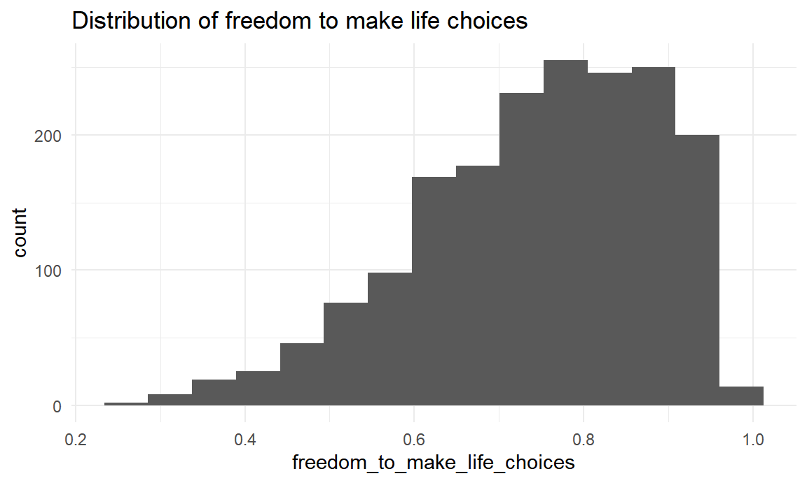
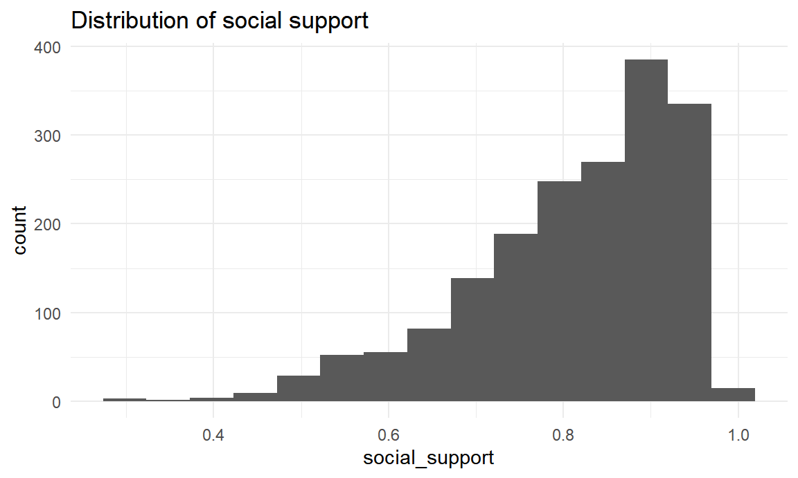

First Let’s take a peak of our dataset:
happiness_df %>% head() %>% knitr::kable()| country_name | regional_indicator | year | ladder_score | logged_gdp_per_capita | social_support | healthy_life_expectancy | freedom_to_make_life_choices | generosity | perceptions_of_corruption |
|---|---|---|---|---|---|---|---|---|---|
| Afghanistan | South Asia | 2021 | 2.523 | 7.695 | 0.463 | 52.493 | 0.382 | -0.102 | 0.924 |
| Afghanistan | South Asia | 2019 | 2.375 | 7.697 | 0.420 | 52.400 | 0.394 | -0.108 | 0.924 |
| Afghanistan | South Asia | 2018 | 2.694 | 7.692 | 0.508 | 52.600 | 0.374 | -0.094 | 0.928 |
| Afghanistan | South Asia | 2017 | 2.662 | 7.697 | 0.491 | 52.800 | 0.427 | -0.121 | 0.954 |
| Afghanistan | South Asia | 2016 | 4.220 | 7.697 | 0.559 | 53.000 | 0.523 | 0.042 | 0.793 |
| Afghanistan | South Asia | 2015 | 3.983 | 7.702 | 0.529 | 53.200 | 0.389 | 0.080 | 0.881 |
The dataset has 1816 observations and 10 variables, Let’s take a deeper look into each variable:
There are 149 unique countries in this dataset.
happiness_df %>%
group_by(country_name) %>%
summarize(
n_obs = n()
) %>%
group_by(n_obs) %>%
summarize(
number_of_countries = n()
) %>%
knitr::kable()| n_obs | number_of_countries |
|---|---|
| 1 | 6 |
| 3 | 2 |
| 4 | 6 |
| 5 | 3 |
| 6 | 2 |
| 7 | 4 |
| 8 | 3 |
| 9 | 6 |
| 10 | 8 |
| 11 | 4 |
| 12 | 7 |
| 13 | 12 |
| 14 | 31 |
| 15 | 31 |
| 16 | 24 |
We can see that 6 countries appeared only 1 time, while 24 countries appeared 16 times.
This variable represents the region that the country belongs to. There are 10 unique regions in this dataset. The regional indicators are South Asia, Central and Eastern Europe, Middle East and North Africa, Latin America and Caribbean, Commonwealth of Independent States, North America and ANZ, Western Europe, Sub-Saharan Africa, Southeast Asia, East Asia.
happiness_df %>%
group_by(regional_indicator) %>%
summarize(
n_obs = n()
) %>%
mutate(regional_indicator = fct_reorder(regional_indicator, n_obs)) %>%
ggplot(aes(x = regional_indicator, y = n_obs)) +
geom_col() +
theme(axis.text.x = element_text(angle = 90, vjust = 0.5)) +
labs(
x = "regional indicator",
y = "number of observations",
title = "Number of observations for each region"
)East Asia has the lowest number of observations, while Sub-Saharan Africa has the highest.
happiness_df %>%
group_by(year) %>%
summarize(
n_obs = n()
) %>%
ggplot(aes(x = factor(year), y = n_obs)) +
geom_col() +
theme(axis.text.x = element_text(angle = 90, vjust = 0.5)) +
labs(
x = "year",
y = "number of observations",
title = "Number of observations for each year"
)Year ranges from 2005 to 2021 in this dataset. The year with the most observation is 2021, and the year with the least observation is 2005.
Ladder score is the happiness index.
happiness_df %>%
ggplot(aes(x = ladder_score)) +
geom_histogram(bins = 20) +
labs(title = "Distribution of ladder score")Ladder score ranges from 2.375 to 7.971. The distribution is approximately symmetric with mean at 5.470168.
Since ladder score is the main outcome of our project, we should dive a little deeper by looking at the mean ladder score for each region and year.
happiness_df %>%
group_by(regional_indicator) %>%
summarize(
mean_ladder_score = mean(ladder_score)
) %>%
arrange(mean_ladder_score) %>%
knitr::kable()| regional_indicator | mean_ladder_score |
|---|---|
| Sub-Saharan Africa | 4.317518 |
| South Asia | 4.512207 |
| Commonwealth of Independent States | 5.180830 |
| Middle East and North Africa | 5.271464 |
| Southeast Asia | 5.368957 |
| Central and Eastern Europe | 5.550598 |
| East Asia | 5.682980 |
| Latin America and Caribbean | 5.988366 |
| Western Europe | 6.871429 |
| North America and ANZ | 7.246328 |
Sub-Saharan Africa has the lowest mean ladder score across all years, while North America and ANZ has the highest.
happiness_df %>%
group_by(year) %>%
summarize(
mean_ladder_score = mean(ladder_score)
) %>%
knitr::kable()| year | mean_ladder_score |
|---|---|
| 2005 | 7.418000 |
| 2006 | 5.183946 |
| 2007 | 5.367533 |
| 2008 | 5.437252 |
| 2009 | 5.480366 |
| 2010 | 5.546394 |
| 2011 | 5.411216 |
| 2012 | 5.446638 |
| 2013 | 5.379185 |
| 2014 | 5.396512 |
| 2015 | 5.404903 |
| 2016 | 5.418459 |
| 2017 | 5.505721 |
| 2018 | 5.542738 |
| 2019 | 5.559349 |
| 2020 | 5.873580 |
| 2021 | 5.532839 |
Year 2005 has significantly higher ladder score than the others. However, because year 2005 only has one observation, the difference should not be considered significant. Ladder scores for all other years are around 5.5.
happiness_df %>%
ggplot(aes(x = logged_gdp_per_capita)) +
geom_histogram(bins = 15) +
labs(title = "Distribution of logged GDP per capita")Logged GDP per capita ranges from 6.635 to 11.648. The distribution is approximately symmetric with mean at 9.3522203.
happiness_df %>%
ggplot(aes(x = healthy_life_expectancy)) +
geom_histogram(bins = 15) +
labs(title = "Distribution of healthy life expectancy")Healthy life expectancy ranges from 32.3 to 77.1. The distribution is skewed right. The median of healthy life expectancy is 65.3015.
happiness_df %>%
ggplot(aes(x = freedom_to_make_life_choices)) +
geom_histogram(bins = 15) +
labs(title = "Distribution of freedom to make life choices")
Freedom to make life choices ranges from 0.258 to 0.985. The distribution is skewed right. The median of freedom to make life choices is 0.766.
happiness_df %>%
ggplot(aes(x = generosity)) +
geom_histogram(bins = 15) +
labs(title = "Distribution of generosity")Generosity ranges from -0.335 to 0.689. The distribution is approximately symmetric with mean at -0.0031773.
happiness_df %>%
ggplot(aes(x = perceptions_of_corruption)) +
geom_histogram(bins = 15) +
labs(title = "Distribution of perceptions of corruption")Perceptions of corruption ranges from 0.035 to 0.983. The distribution is skewed right. The median of perceptions of corruption is 0.804.
Finally, let’s take a look at the summary tables of mean and standard deviation of each variable.
happiness_df %>%
select(ladder_score, logged_gdp_per_capita, social_support, healthy_life_expectancy, freedom_to_make_life_choices, generosity, perceptions_of_corruption) %>%
tbl_summary(missing_text = "(Missing)",
statistic = list(all_continuous() ~ "{mean} ({sd})"),
label = list(ladder_score ~ "Ladder score",
logged_gdp_per_capita ~ "Logged gdp per capita",
social_support ~ "Social support",
healthy_life_expectancy ~ "Healthy life exp",
freedom_to_make_life_choices ~ "Freedom to make life choices",
generosity ~ "Generosity",
perceptions_of_corruption ~ "Perceiptions of corruption")) %>%
bold_labels() %>%
italicize_levels() | Characteristic | N = 1,8161 |
|---|---|
| Ladder score | 5.47 (1.13) |
| Logged gdp per capita | 9.35 (1.15) |
| Social support | 0.81 (0.12) |
| Healthy life exp | 64 (8) |
| Freedom to make life choices | 0.75 (0.14) |
| Generosity | 0.00 (0.16) |
| Perceiptions of corruption | 0.75 (0.19) |
| 1 Mean (SD) | |
happiness_df %>%
select(regional_indicator, ladder_score, logged_gdp_per_capita, social_support, healthy_life_expectancy, freedom_to_make_life_choices, generosity, perceptions_of_corruption) %>%
tbl_summary(by = "regional_indicator",
missing_text = "(Missing)",
statistic = list(all_continuous() ~ "{mean} ({sd})"),
label = list(ladder_score ~ "Ladder score",
logged_gdp_per_capita ~ "Logged gdp per capita",
social_support ~ "Social support",
healthy_life_expectancy ~ "Healthy life exp",
freedom_to_make_life_choices ~ "Freedom to make life choices",
generosity ~ "Generosity",
perceptions_of_corruption ~ "Perceiptions of corruption")) %>%
bold_labels() %>%
italicize_levels() | Characteristic | Central and Eastern Europe, N = 2241 | Commonwealth of Independent States, N = 1651 | East Asia, N = 491 | Latin America and Caribbean, N = 2921 | Middle East and North Africa, N = 1381 | North America and ANZ, N = 581 | South Asia, N = 871 | Southeast Asia, N = 1161 | Sub-Saharan Africa, N = 4211 | Western Europe, N = 2661 |
|---|---|---|---|---|---|---|---|---|---|---|
| Ladder score | 5.55 (0.63) | 5.18 (0.62) | 5.68 (0.51) | 5.99 (0.76) | 5.27 (0.96) | 7.25 (0.18) | 4.51 (0.69) | 5.37 (0.75) | 4.32 (0.64) | 6.87 (0.69) |
| Logged gdp per capita | 10.03 (0.36) | 9.28 (0.66) | 10.17 (0.64) | 9.33 (0.62) | 9.61 (0.76) | 10.76 (0.14) | 8.33 (0.55) | 9.26 (0.96) | 7.99 (0.76) | 10.79 (0.28) |
| Social support | 0.86 (0.08) | 0.82 (0.11) | 0.87 (0.06) | 0.85 (0.07) | 0.77 (0.10) | 0.94 (0.02) | 0.65 (0.13) | 0.81 (0.07) | 0.71 (0.11) | 0.92 (0.05) |
| Healthy life exp | 67 (2) | 63 (2) | 70 (6) | 66 (5) | 65 (4) | 72 (2) | 60 (5) | 64 (5) | 53 (5) | 72 (1) |
| Freedom to make life choices | 0.69 (0.14) | 0.70 (0.13) | 0.71 (0.09) | 0.78 (0.11) | 0.64 (0.13) | 0.90 (0.04) | 0.69 (0.17) | 0.87 (0.07) | 0.70 (0.11) | 0.84 (0.12) |
| Generosity | -0.10 (0.10) | -0.12 (0.14) | -0.04 (0.12) | -0.03 (0.12) | -0.06 (0.13) | 0.23 (0.08) | 0.08 (0.11) | 0.20 (0.22) | -0.01 (0.11) | 0.06 (0.17) |
| Perceiptions of corruption | 0.87 (0.09) | 0.78 (0.16) | 0.79 (0.11) | 0.79 (0.09) | 0.77 (0.13) | 0.45 (0.16) | 0.81 (0.07) | 0.73 (0.25) | 0.79 (0.13) | 0.56 (0.24) |
| 1 Mean (SD) | ||||||||||
happiness_df %>%
select(year, ladder_score, logged_gdp_per_capita, social_support, healthy_life_expectancy, freedom_to_make_life_choices, generosity, perceptions_of_corruption) %>%
filter(year != 2005) %>%
tbl_summary(by = "year",
missing_text = "(Missing)",
statistic = list(all_continuous() ~ "{mean} ({sd})"),
label = list(ladder_score ~ "Ladder score",
logged_gdp_per_capita ~ "Logged gdp per capita",
social_support ~ "Social support",
healthy_life_expectancy ~ "Healthy life exp",
freedom_to_make_life_choices ~ "Freedom to make life choices",
generosity ~ "Generosity",
perceptions_of_corruption ~ "Perceiptions of corruption")) %>%
bold_labels() %>%
italicize_levels() | Characteristic | 2006, N = 741 | 2007, N = 921 | 2008, N = 991 | 2009, N = 1011 | 2010, N = 1091 | 2011, N = 1251 | 2012, N = 1161 | 2013, N = 1191 | 2014, N = 1231 | 2015, N = 1241 | 2016, N = 1221 | 2017, N = 1291 | 2018, N = 1261 | 2019, N = 1261 | 2020, N = 811 | 2021, N = 1491 |
|---|---|---|---|---|---|---|---|---|---|---|---|---|---|---|---|---|
| Ladder score | 5.18 (1.11) | 5.37 (1.02) | 5.44 (1.20) | 5.48 (1.06) | 5.55 (1.15) | 5.41 (1.10) | 5.45 (1.16) | 5.38 (1.20) | 5.40 (1.21) | 5.40 (1.15) | 5.42 (1.15) | 5.51 (1.13) | 5.54 (1.09) | 5.56 (1.13) | 5.87 (1.00) | 5.53 (1.07) |
| Logged gdp per capita | 9.05 (1.22) | 9.17 (1.11) | 9.16 (1.25) | 9.29 (1.14) | 9.42 (1.11) | 9.25 (1.16) | 9.34 (1.10) | 9.34 (1.11) | 9.36 (1.15) | 9.36 (1.17) | 9.40 (1.16) | 9.39 (1.16) | 9.40 (1.18) | 9.42 (1.15) | 9.75 (0.95) | 9.43 (1.16) |
| Social support | 0.83 (0.12) | 0.81 (0.11) | 0.78 (0.15) | 0.81 (0.11) | 0.83 (0.10) | 0.81 (0.13) | 0.81 (0.12) | 0.81 (0.11) | 0.81 (0.12) | 0.80 (0.13) | 0.82 (0.12) | 0.81 (0.12) | 0.81 (0.12) | 0.81 (0.12) | 0.84 (0.11) | 0.81 (0.11) |
| Healthy life exp | 60 (9) | 61 (8) | 61 (9) | 63 (8) | 63 (8) | 62 (8) | 63 (7) | 63 (7) | 64 (7) | 64 (7) | 64 (7) | 64 (7) | 65 (7) | 65 (7) | 67 (6) | 65 (7) |
| Freedom to make life choices | 0.73 (0.13) | 0.69 (0.15) | 0.68 (0.16) | 0.68 (0.15) | 0.71 (0.15) | 0.73 (0.15) | 0.71 (0.15) | 0.73 (0.13) | 0.74 (0.14) | 0.75 (0.13) | 0.76 (0.13) | 0.78 (0.13) | 0.78 (0.12) | 0.79 (0.12) | 0.82 (0.09) | 0.79 (0.11) |
| Generosity | 0.00 (0.17) | 0.01 (0.17) | 0.02 (0.17) | -0.02 (0.16) | 0.00 (0.16) | -0.02 (0.17) | 0.00 (0.17) | 0.00 (0.17) | 0.02 (0.16) | 0.02 (0.17) | 0.00 (0.16) | -0.01 (0.16) | -0.02 (0.16) | -0.02 (0.15) | 0.00 (0.14) | -0.02 (0.15) |
| Perceiptions of corruption | 0.76 (0.18) | 0.80 (0.17) | 0.77 (0.19) | 0.78 (0.18) | 0.77 (0.18) | 0.76 (0.18) | 0.77 (0.18) | 0.76 (0.18) | 0.74 (0.19) | 0.74 (0.20) | 0.75 (0.19) | 0.72 (0.18) | 0.73 (0.19) | 0.72 (0.19) | 0.71 (0.20) | 0.73 (0.18) |
| 1 Mean (SD) | ||||||||||||||||
Note: Since year 2005 only has one observation, it is removed from this summary table.
Social support

Social support ranges from 0.291 to 0.987. Since the distribution is skewed right, we will look at the median instead of the mean. The median of social support is 0.836.